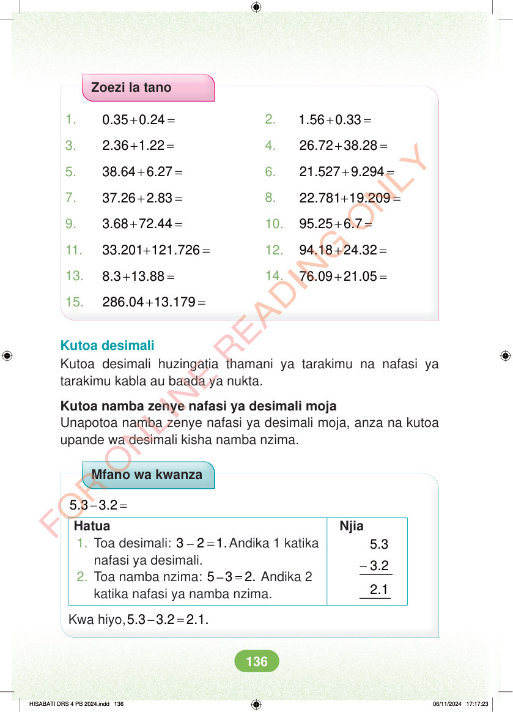

Zoezi la tano 1. + = 0.35 0.24 2. + = 1.56 0.33 3. + = 2.36 1.22 4. + = 26.72 38.28 5. + = 38.64 6.27 6. + = 21.527 9.294 7. + = 37.26 2.83 8. + = 22.781 19.209 9. + = 3.68 72.44 10. + = 95.25 6.7 11. + = 33.201 121.726 12. + = 94.18 24.32 13. + = 8.3 13.88 14. + = 76.09 21.05 15. + = 286.04 13.179 Kutoa desimali Kutoa desimali huzingatia thamani ya tarakimu na nafasi ya tarakimu kabla au baada ya nukta. Kutoa namba zenye nafasi ya desimali moja Unapotoa namba zenye nafasi ya desimali moja, anza na kutoa upande wa desimali kisha namba nzima. Mfano wa kwanza - = 5.3 3.2 Hatua Njia 5.3 - 3.2 2.1 1. Toa desimali: – = 3 2 1.Andika 1 katika nafasi ya desimali. 2. Toa namba nzima: – = 5 3 2. Andika 2 katika nafasi ya namba nzima. Kwa hiyo, - = 5.3 3.2 2.1. HISABATI DRS 4 PB 2024.indd 136 HISABATI DRS 4 PB 2024.indd 136 06/11/2024 17:17:23 06/11/2024 17:17:23